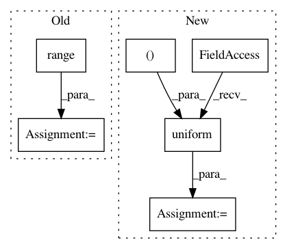

d1d8284dd21afef5f5cc3e0b98f67a9dab4d57cd,tests/test_hypersphere_tensorflow.py,TestHypersphereOnTensorFlow,test_exp_vectorization,#TestHypersphereOnTensorFlow#,171
Before Change
gs.testing.assert_allclose(result.shape, (n_samples, dim))
expected = gs.zeros((n_samples, dim))
for i in range(n_samples):
expected[i] = self.metric.exp(one_tangent_vec[i], n_base_points[i])
expected = helper.to_vector(expected)
gs.testing.assert_allclose(result, expected)
n_tangent_vecs = self.space.projection_to_tangent_space(
After Change
one_tangent_vec = self.space.projection_to_tangent_space(
one_vec, base_point=one_base_point)
result = self.metric.exp(one_tangent_vec, one_base_point)
point_numpy = np.random.uniform(size=(1, dim))
with self.test_session():
self.assertShapeEqual(point_numpy, result)
n_tangent_vecs = self.space.projection_to_tangent_space(
In pattern: SUPERPATTERN
Frequency: 3
Non-data size: 6
Instances
Project Name: geomstats/geomstats
Commit Name: d1d8284dd21afef5f5cc3e0b98f67a9dab4d57cd
Time: 2018-09-12
Author: ninamio78@gmail.com
File Name: tests/test_hypersphere_tensorflow.py
Class Name: TestHypersphereOnTensorFlow
Method Name: test_exp_vectorization
Project Name: geomstats/geomstats
Commit Name: 26138c45ee77d508abb928e8adc6a77aa2e9d149
Time: 2018-09-14
Author: ninamio78@gmail.com
File Name: tests/test_hypersphere_tensorflow.py
Class Name: TestHypersphereOnTensorFlow
Method Name: test_exp_vectorization
Project Name: freelunchtheorem/Conditional_Density_Estimation
Commit Name: 6fbef6a3631d94991ab02a9f7411e3b6fd954dfc
Time: 2019-01-12
Author: jonas.rothfuss@gmx.de
File Name: tests/unittests_estimators.py
Class Name: TestConditionalDensityEstimators_2d_gaussian
Method Name: test_NKDE_with_2d_gaussian